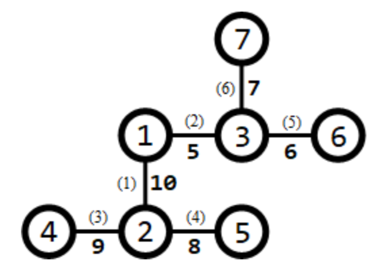
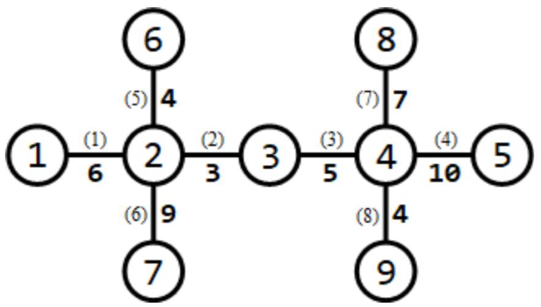
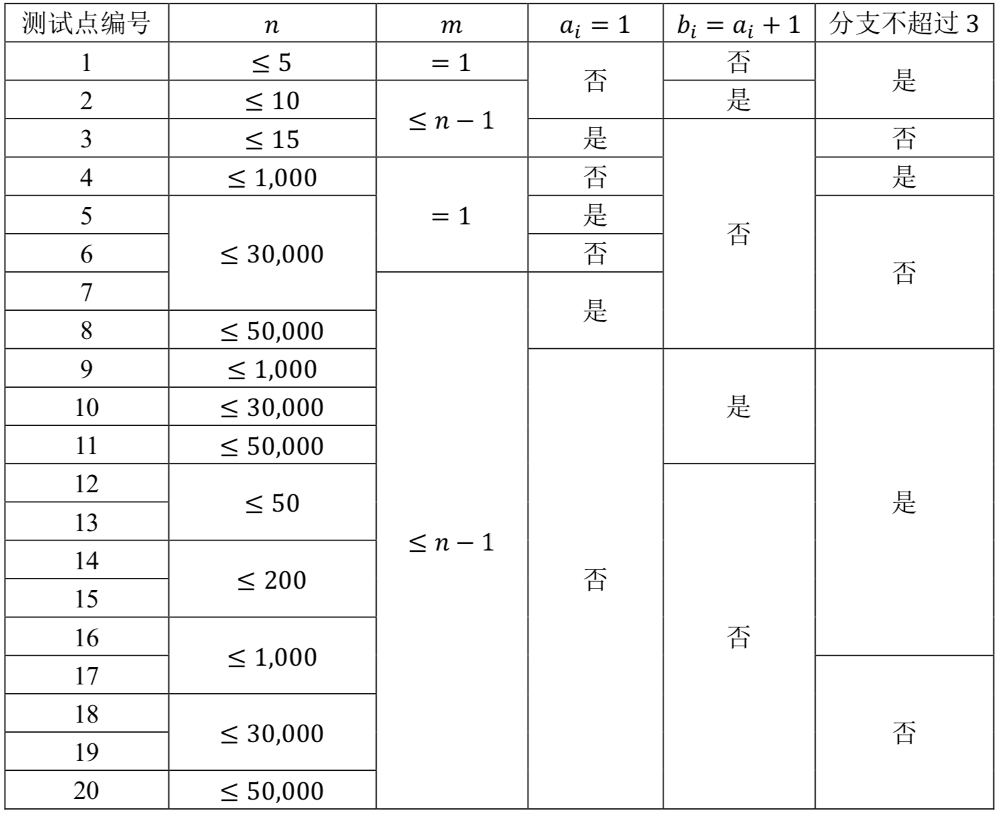

【样例 1 说明】
所有路口及适合于修建赛道的道路如下图所示：

道路旁括号内的数字表示道路的编号，非括号内的数字表示道路长度。
需要修建 $1$ 条赛道。可以修建经过第 $3,1,2,6$ 条道路的赛道从（路口 $4$ 到路口 $7$），则该赛道的长度为 $9 + 10 + 5 + 7 = 31$，为所有方案中的最大值。
【样例 2 说明】
所有路口及适合于修建赛道的道路如下图所示：

需要修建 $3$ 条赛道。可以修建如下 $3$ 条赛道：
- 经过第 $1,6$ 条道路的赛道（从路口 $1$到路口 $7$），长度为 $6 + 9 = 15$;
- 经过第 $5,2,3,8$ 条道路的赛道（从路口 $6$ 到路口 $9$），长度为 $4 + 3 + 5 + 4 = 16$;
- 经过第 $7,4$ 条道路的赛道（从路口 $8$ 到路口 $5$），长度为 $7 + 10 = 17$。
长度最小的赛道长度为 $15$，为所有方案中的最大值。
【数据规模与约定】
所有测试数据的范围和特点如下表所示

其中，“分支不超过 3”的含义为：每个路口至多有 $3$ 条道路与其相连。对于所有的数据，$2≤𝑛≤50,000，1≤𝑚≤𝑛−1，1≤𝑎_𝑖,𝑏_𝑖≤𝑛，1≤𝑙_𝑖≤10,000$。
 Comet OJ
Comet OJ